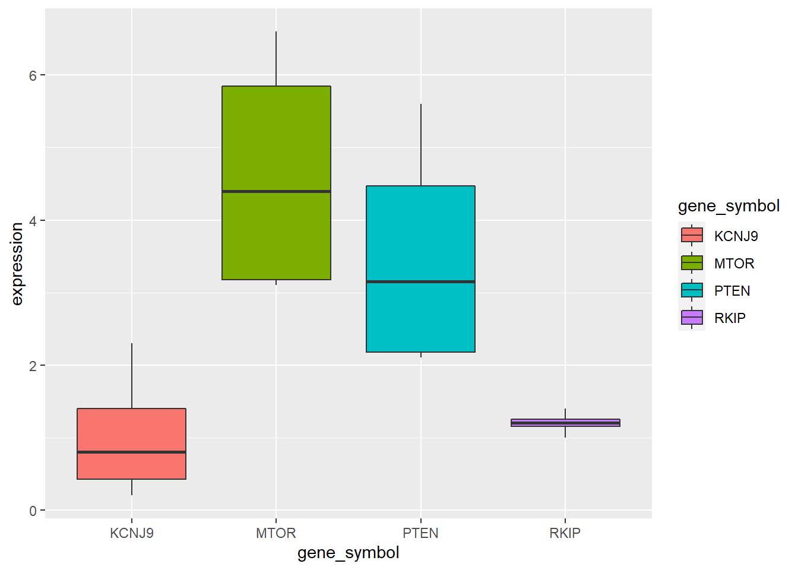
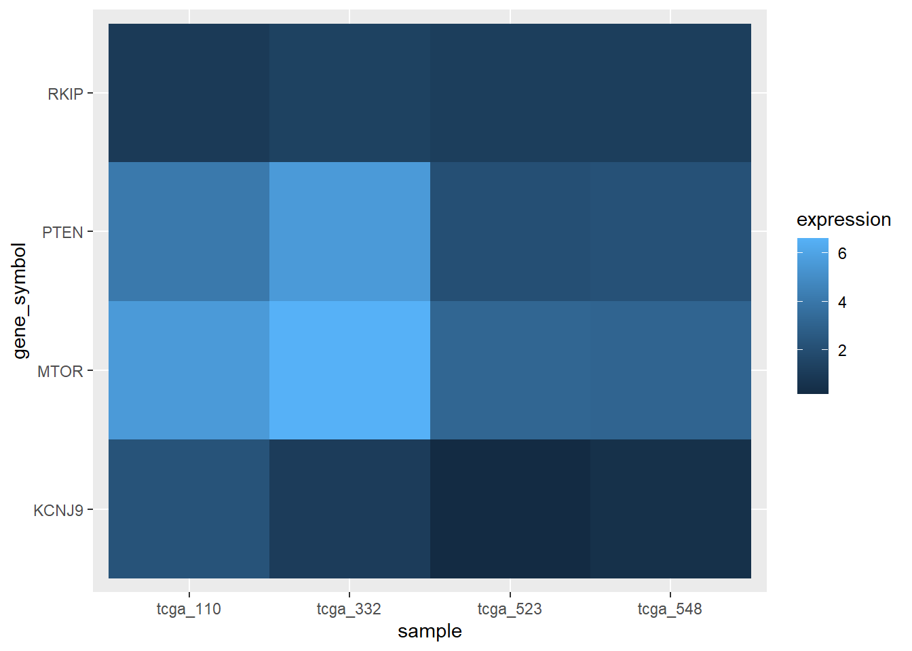

Chapter 7 Part 5: Doing useful things with multiple tables
7.1 Learning Objectives
- Learn and apply
bind_rows()to combine rows from two or more datasets - Learn about the different kinds of joins and how they merge data
- Apply
inner_join()andleft_join()to join tables on columns - Standardize variable names using
clean_names() - Utilize
pivot_longer()to make a wide dataset long
7.2 Getting set up
## -- Attaching packages ---------------------------------- tidyverse 1.3.0 --## v ggplot2 3.3.1 v purrr 0.3.4
## v tibble 3.0.1 v dplyr 1.0.0
## v tidyr 1.1.0 v stringr 1.4.0
## v readr 1.3.1 v forcats 0.5.0## -- Conflicts ------------------------------------- tidyverse_conflicts() --
## x dplyr::filter() masks stats::filter()
## x dplyr::lag() masks stats::lag()##
## Attaching package: 'janitor'## The following objects are masked from 'package:stats':
##
## chisq.test, fisher.test## here() starts at C:/Code/ready_for_r_site/static/book7.3 bind_rows()
7.3.1 Motivation for bind_rows()
Imagine that your lab is part of a large consortium studying the effects of smoking. As the lead data scientist, you’ve helped oversee the collection and documentation several observations for many variables of interest.
Many labs within the consortium have accumulated data, and not all were following the guidelines you set for the tables.
## # A tibble: 5 x 5
## primary_diagnosis tumor_stage age_at_diagnosis vital_status morphology
## <chr> <chr> <dbl> <chr> <chr>
## 1 C34.1 stage ia 24477 dead 8070/3
## 2 C34.1 stage ib 26615 dead 8070/3
## 3 C34.3 stage ib 28171 dead 8070/3
## 4 C34.1 stage ia 27154 alive 8083/3
## 5 C34.1 stage iiia 23370 alive 8070/3## # A tibble: 5 x 5
## primary_diagnosis tumor_stage age_at_diagnosis vital_status morphology
## <chr> <chr> <dbl> <chr> <chr>
## 1 C67.9 stage iv 17682 alive 8120/3
## 2 C67.9 stage ii 19776 alive 8120/3
## 3 C67.9 stage iii 23631 alive 8120/3
## 4 C67.9 stage iv 26546 dead 8120/3
## 5 C67.9 stage iii 24534 dead 8120/3## # A tibble: 5 x 5
## VITAL_STATUS `Age at Diagnosis` tumorStage Morphology primary_diagnosis
## <chr> <dbl> <chr> <chr> <chr>
## 1 alive 17682 stage iv 8120/3 C67.9
## 2 alive 19776 stage ii 8120/3 C67.9
## 3 alive 23631 stage iii 8120/3 C67.9
## 4 dead 26546 stage iv 8120/3 C67.9
## 5 dead 24534 stage iii 8120/3 C67.97.3.2 Binding two tables together
How can you combine datasets from individual labs? Enter bind_rows()…
## # A tibble: 10 x 5
## primary_diagnosis tumor_stage age_at_diagnosis vital_status morphology
## <chr> <chr> <dbl> <chr> <chr>
## 1 C34.1 stage ia 24477 dead 8070/3
## 2 C34.1 stage ib 26615 dead 8070/3
## 3 C34.3 stage ib 28171 dead 8070/3
## 4 C34.1 stage ia 27154 alive 8083/3
## 5 C34.1 stage iiia 23370 alive 8070/3
## 6 C67.9 stage iv 17682 alive 8120/3
## 7 C67.9 stage ii 19776 alive 8120/3
## 8 C67.9 stage iii 23631 alive 8120/3
## 9 C67.9 stage iv 26546 dead 8120/3
## 10 C67.9 stage iii 24534 dead 8120/3bind_rows() allows you to append one dataset to the bottom of another dataset. We can see that smoke_1 contained 549 rows and smoke_2 contained 603 rows. After using bind_rows(), we now have a single dataset containing 1152 rows.
That’s all pretty cool, until you meet a rogue lab. This lab almost seems as if they’ve gone out of their way to make things difficult. Rather than putting columns in the standard order specified, they’ve switched them around.
Even worse, they’ve named the columns differently! If there are only a few columns, sure, we could manually fix this. But what if this was RNASeq data, with thousands of column names to fix?!
Well, let’s remember we still have clean_names(). That can at least help us get the column names into the standard format.
Our column names are at least the same, but they’re still out of order! If we append smoke_3_clean to smoke_1, vital_status will be appened under primary_diagnosis, age_at_diagnosis will be appended under tumor_stage, and so on. Do we need to reorder the columns before we append them?
## # A tibble: 10 x 5
## primary_diagnosis tumor_stage age_at_diagnosis vital_status morphology
## <chr> <chr> <dbl> <chr> <chr>
## 1 C34.1 stage ia 24477 dead 8070/3
## 2 C34.1 stage ib 26615 dead 8070/3
## 3 C34.3 stage ib 28171 dead 8070/3
## 4 C34.1 stage ia 27154 alive 8083/3
## 5 C34.1 stage iiia 23370 alive 8070/3
## 6 C67.9 stage iv 17682 alive 8120/3
## 7 C67.9 stage ii 19776 alive 8120/3
## 8 C67.9 stage iii 23631 alive 8120/3
## 9 C67.9 stage iv 26546 dead 8120/3
## 10 C67.9 stage iii 24534 dead 8120/3Well look at that. bind_rows() takes care of the out-of-order columns for us!
7.4 Joining Tables
7.4.1 Motivation
You have data on patients from two sources - one are labs, and they supply patient ids. The second source comes from an electronic medical record. How do you combine these two into a single table?
7.4.2 Naming conventions
 source: https://github.com/gadenbuie/tidyexplain
source: https://github.com/gadenbuie/tidyexplain
Before we talk about joins, we need to define some terms.
left table and right table: Whenever we join two tables, we will have
- a left table (in this case, the
xtable) and - a right table (in this case, the
ytable).
key: In order to join the two tables, we have to somehow map the rows of our left table (x) with the rows of our other table (y). We do this by joining together rows with a common variable. In our case, we need to join rows based on the first column in both tables. The column that we join on is called a key.
source: https://github.com/gadenbuie/tidyexplain
In the above example, we see that there is a row in x whose key is 2, and there is a row in y whose key is 2 as well. So it makes sense to join these two rows together.
So, by matching the rows with identical keys, we can put together a table that incorporates information from both tables.
7.4.3 Inner Joins
 source: https://github.com/gadenbuie/tidyexplain
source: https://github.com/gadenbuie/tidyexplain
With an inner join, we are matching rows based on our key. If there is not a match in both tables, we don’t include the row with that key.
In the example above, we don’t keep row 3 in table x or row 4 in table y.
7.4.4 Joining Syntax
Keeping these terms in mind, let’s look at the syntax for joining two tables together.
inner_join(table_x, table_y,
by = c(key_column_x = key_column_y)
)If we just wanted to join the two tables, the above is enough. We first specify the left table (table_x), and the right table (table_y).
Note the by argument. This is the argument where we specify which column in each table contains our key.
7.4.5 The more dplyr way to do joins
The more dplyr way to do joins is below:
#start with left table
table_x %>%
#join left table with right table
inner_join(y = table_y,
#point out the key column in each table
by = c(key_column_x= key_column_y)
)We start with our left table, table_x. The main difference is that we don’t need to specify the x argument in inner_join(), because we are piping table_x as the first argument of inner_join().
7.4.6 Left Joins

Left joins are a little different. In a left join, we keep all the rows in the left table regardless of whether there is a match in the right table.
In the example above, we keep row 3 in table x even though it doesn’t have a match in table y.
Because there is no information from the right table, these rows will have an NA. That is, the information is missing for the columns that come from the right table.
7.4.7 Let’s work through an example
Say we have a set of patients. We want to join their information with their labs, in particular a white blood cell count (a WBC).
We also need to know whether there are patients in our set who haven’t gotten a CBC.
Because the lab system isn’t part of the electronic health record, we’ll need to make a join on the patient table to the lab table.
patient_table <- read_excel("data/patient_example.xlsx", sheet = 1)
wbc_table <- read_excel("data/patient_example.xlsx", sheet = 2)Let’s look at patient_table, which we’ll use as our left table:
## # A tibble: 4 x 4
## patient_id first_name last_name age
## <dbl> <chr> <chr> <dbl>
## 1 2333 Scarlet O'Hara 75
## 2 7359 Neil O'Hara 30
## 3 1414 Ivy Lee 43
## 4 8424 May Lynne 14Here is wbc_table, which we’ll use as our right table:
## # A tibble: 4 x 2
## patient_id wbc_value
## <dbl> <dbl>
## 1 2333 5000
## 2 7359 12000
## 3 1414 6000
## 4 4409 4000Let’s do an inner_join():
## # A tibble: 3 x 5
## patient_id first_name last_name age wbc_value
## <dbl> <chr> <chr> <dbl> <dbl>
## 1 2333 Scarlet O'Hara 75 5000
## 2 7359 Neil O'Hara 30 12000
## 3 1414 Ivy Lee 43 60007.4.8 Your Turn
Modify the code below to do a left_join() on patient_table and wbc_table.
## # A tibble: 3 x 5
## patient_id first_name last_name age wbc_value
## <dbl> <chr> <chr> <dbl> <dbl>
## 1 2333 Scarlet O'Hara 75 5000
## 2 7359 Neil O'Hara 30 12000
## 3 1414 Ivy Lee 43 6000Which patient in patient_table didn’t get a WBC?
7.5 Making your data long: pivot_longer()

The last thing we’ll talk about is the difference between the wide data format and the long data format.
A really common format in bioinformatics is the expression matrix.
In an expression matrix, the rows correspond to different genes and the columns correspond to different samples.
## # A tibble: 4 x 5
## gene_symbol tcga_110 tcga_332 tcga_548 tcga_523
## <chr> <dbl> <dbl> <dbl> <dbl>
## 1 PTEN 4.1 5.6 2.2 2.1
## 2 MTOR 5.6 6.6 3.1 3.2
## 3 RKIP 1 1.4 1.2 1.2
## 4 KCNJ9 2.3 1.1 0.5 0.27.5.1 However…
This format isn’t super useful for a lot of data manipulations.
It’s because the columns correspond to samples, and this prevents us from plotting things like PTEN expression across the samples.
This kind of data is in a format that is called wide format. What we need to do is collapse the numerical values into a single column.
7.5.2 The magic of pivot_longer()
pivot_longer() is the function that will let us make our wide data long.
It takes three arguments
cols- the columns to collapse. We haven’t talked abouttidyselectverbs, but there are a few that let you select columns based on naming criteria. Here we’re using thestarts_with()selector to grab the columns that begin withtcganames_to- the name of the column where the labels will be consolidated tovalues_to- the name of the column where the values in the columns in the wide data will be consolidated to.
expression_long <-
expression_example %>%
pivot_longer(cols= starts_with("tcga"),
names_to = "sample",
values_to = "expression")
expression_long## # A tibble: 16 x 3
## gene_symbol sample expression
## <chr> <chr> <dbl>
## 1 PTEN tcga_110 4.1
## 2 PTEN tcga_332 5.6
## 3 PTEN tcga_548 2.2
## 4 PTEN tcga_523 2.1
## 5 MTOR tcga_110 5.6
## 6 MTOR tcga_332 6.6
## 7 MTOR tcga_548 3.1
## 8 MTOR tcga_523 3.2
## 9 RKIP tcga_110 1
## 10 RKIP tcga_332 1.4
## 11 RKIP tcga_548 1.2
## 12 RKIP tcga_523 1.2
## 13 KCNJ9 tcga_110 2.3
## 14 KCNJ9 tcga_332 1.1
## 15 KCNJ9 tcga_548 0.5
## 16 KCNJ9 tcga_523 0.27.5.3 Doing things with the long data
Now that we have our long data, we can do our usual kinds of plotting.

We can even make expression heatmaps with geom_tile.

7.5.4 pivot_wider() exists too!
And part of your assignment will be to figure out how to use it.
7.6 Assignment
Use
bind_rows()to bind all threesmokedatasets (smoke_1,smoke_2, andsmoke_3) together. Hint: you’ll have to do twobind_row()operations.Take a look at the
patientandpatient_encountertables loaded below.
## Parsed with column specification:
## cols(
## patient_id = col_double(),
## GENDER = col_character(),
## First_name = col_character(),
## Last_name = col_character(),
## status = col_double(),
## Insurance_ID = col_double(),
## race = col_double(),
## postalcode = col_double(),
## riskCat = col_character(),
## riskscore = col_double()
## )## Parsed with column specification:
## cols(
## patientid = col_double(),
## Event_ID = col_double(),
## outcome = col_character(),
## Admit_date = col_character(),
## Admit_source = col_character()
## )How many rows does each table have?
Write a inner_join() and assign it to inner_patient with
patientas the left tablepatient_encounteras the right table- joining on the approriate columns (look at the column names carefully!)
How many rows does inner_patient have?
Do a left_join of the two tables with the same criteria as above. Assign it to left_patient.
Count the number of rows in left_patient. Is it what you expected?
- Look up the documentation for
pivot_wider. Transformexpression_longerback to a wide format, but this time with columns as genes and rows as samples.
Hint: Always look at the examples in the documentation! They’ll help you.